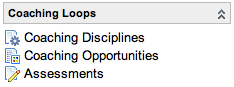

Coaching Loops
Contents
1 Overview
The coaching loops feature enables a coach to monitor a specific behavior in an individual or group, the coachee, and provide timely feedback so that the coachee can do a better job the next time.
Coaching loops can be applied to any task-based process in ServiceNow, such as incident management, problem management, and change management. It can be applied to non-task or custom tables as well if the administrator configures a business rule. Coaching loops encourage feedback after an action has been completed. It is not intended for managing active tasks.
2 Getting Started with Coaching Loops
2.1 Activating the Plugin
Administrators can activate the Coaching Loops plugin with the Calgary release.
| Click the plus to expand instructions for activating a plugin. |
|---|
|
If you have the admin role, use the following steps to activate the plugin.
|
Coaching Loops requires Custom Charts and Planned Task.
2.2 Application Roles
Coachees with the cl_user role can view Assessments and Coaching History modules but cannot edit any coaching loops records.
Coaches with the cl_admin role can perform all functions within the application.
| |
Note: The cl_admin role inherits the cl_user role, and the cl_user role inherits the itil role. |
2.3 Application Modules
|  | The coaching loops application contains these modules:
|
{kind=link}
Users can view their coaching history by navigating to Service Desk > My Coaching History.
{kind=link}
2.4 How Assessments are Created
ServiceNow evaluates coaching opportunities against coaching disciplines to generate coaching assessments. When coachees work through an ITSM process, such as resolving an incident, they perform activities that may be defined as coaching opportunities.
Several criteria must be met to generate a coaching assessment:
- A coaching discipline and a coaching opportunity must exist for the same table.
- A single user action, such as updating an incident or changing an incident priority, must satisfy the conditions defined on both the discipline and opportunity records.
- The Coachee on the Opportunity record must be a member of the Coachee group on the discipline record.
When a coaching discipline and coaching opportunity pair meets these criteria, ServiceNow creates an assessment record for the coachee and assigns it to the coaching group
2.4.1 Using Peer Reviewers
Defining User peer reviewers for a discipline creates additional assessment records as child records to a primary assessment. Peer reviewer assessments are created when the primary assessment is created. Defining Group peer reviewers creates an additional assessment record for each user within the peer group. These additional assessment records are automatically assigned to the peer reviewers.
| |
Note: Peer reviewers do not automatically receive the necessary roles to view or edit coaching assessments. Ensure all peer reviewers have the necessary roles to complete an assessment. |
3 Using Coaching Loops
Using ServiceNow coaching loops involves these steps:
- Create a coaching discipline: define the process on which a coachee can be coached.
- Create a coaching opportunity: define the critical moments in a process where a coachee can be coached.
- Complete coaching assessments: review the work of a coachee and provide timely feedback.
3.1 Creating a Coaching Discipline
A coaching discipline describes the relationship between a process that can be improved, the coaches, and the coachees. For example, one discipline might associate the Service Desk group with the London Coaching group for activities within the Incident table.
{kind=link}
Administrators can create new coaching disciplines.
- Navigate to Coaching Loops > Coaching Disciplines.
- Click New to open a new Coaching Discipline form.
- Populate the fields as appropriate and click Submit.
| Field | Description |
|---|---|
| Short description | Enter a brief description of the coaching discipline being created. |
| Discipline | [Required] Select the table representing the work area or topic to be evaluated. |
| Condition | Use the condition builder to define a coachable situation. Conditions for disciplines are primarily static such as when the priority of an incident is high or critical. |
| Active | Select this check box to have the discipline evaluated for coaching. Clear the check box to discontinue evaluation of the discipline. |
| Order | [Required] Enter a number to set the priority for evaluating disciplines. A lower order indicates a higher priority. |
| Coachee Group | [Required] Select the group whose members are eligible for coaching for this discipline. |
| Coaching Group | [Required] Select the group whose members are eligible to provide coaching for this discipline. |
| User peer reviewers | Select peers who can review the work of the coachee. Peers are individuals involved in the event that triggered the coaching assessment. For example, a peer could be the system technician to whom the service desk technician (coachee) hands off an assignment. The systems technician can provide peer feedback in addition to the feedback provided by the coach. Peer reviewers must have the cl_admin role to complete an assessment. |
| Group peer reviewers | Add a group of peers who can review the work of the coachee. Group peer previewers act in the same manner as single user peer reviewers. Multiple groups can be added. |
| Assessment duration | Set the time in which a coaching assessment must be completed. If the assessment is not completed in this duration, ServiceNow automatically closes the assessment as Closed Incomplete. |
| Sample Size (%) | [Required] Specify the percentage of coaching opportunities (critical moments) that generate coaching assessments. This helps limit coaching to a manageable number if too many events occur that meet the criteria for creating a coaching assessment. |
| Take first coaching opportunity | Select this check box to disregard the Sample Size if a user has not been coached for longer than the period specified in the Time to look back field. |
| Time to look back | Specify a time frame to use in combination with the Take first coaching opportunity field. If this amount of time has passed since a user's last coaching assessment, the coach should take the first opportunity to work with the user again. This field appears only if the Take the first coaching opportunity check box is selected. |
| Coach on every opportunity | Select the users who should be coached on every opportunity. For example, the selected users might be new hires and others who require additional coaching. |
3.2 Creating a Coaching Opportunity
A coaching opportunity refers to the critical moments in a process where coaching is appropriate. For example, in incident management, a critical moment might be when an incident is reassigned. Coaching may be provided to determine if the coachee reassigned the incident at the correct time in the incident process or if the coachee assigned the incident to the correct group or user.
{kind=link}
To create a coaching opportunity:
- Navigate to Coaching Loops > Coaching Opportunities.
- Click New to open a new Coaching Opportunity form.
- Populate the fields as appropriate and click Submit.
| Field | Description |
|---|---|
| Table | [Required] Select the table to be evaluated for coaching opportunities. The Table field must match, extend or be extended by the table selected on a discipline record to create an assessment. For example, an opportunity defined for the Incident table can be combined with a discipline defined for the Task table to create an assessment but an opportunity defined for the incident table cannot be combined with a discipline defined for the Problem table. An opportunity defined for the Task table can be combined with a discipline defined for any table that extends the Task table to create an assessment. |
| Condition | Define the event that triggers a coaching opportunity for the selected table. Conditions for opportunities are generally unique events such as when an incident is reassigned. |
| Coachee | Select the field from the selected table that identifies the coachee. |
| Active | Select this check box to evaluate the selected table for coaching opportunities. Clear the check box to disable evaluations. |
| Ignore sample size | Select this check box to ignore the sample size, if one is specified in the discipline based on the same table. If Ignore sample size is selected for a coaching opportunity, that opportunity always creates a coaching assessment when triggered regardless of the discipline Sample size. |
| Order | [Required] Enter a number to set the priority for coaching opportunities if more than one event meets the criteria to create an assessment. A lower order number indicates a higher priority. |
| Snapshot | Enter a script that defines the evaluation process applied to the selected table. This helps the coach understand the context of the assessment, such as a specific task, action, or behavior. You can use fields from the Table selected on the coaching opportunity record. For example, when analyzing the Incident table, use ${number} to display the record number (such as INC0010002) for the incident record that triggered the coaching opportunity. |
3.3 Coaching Assessments
Assessments are task-based records assigned to a coaching group. The record allows coaches to give feedback to coachees. The Quality of data field offers a simple scoring system of the coachee's performance. A coachee can view any field on the assessment form. A coachee cannot edit any field on the assessment for but can add additional Work notes by selecting Review Assessments.
3.3.1 Completing a Coaching Assessment
When an assessment is created, all users in the Coaching group, User peer reviewers, and Group peer reviewers receive a CL Assessment insertion notification.
To complete a coaching assessment:
- Navigate to Coaching Loops > Assessments.
- Click to open an assessment record.
- Review the information displayed on the form to understand the action being assessed.
- Populate the fields as appropriate to review the performance of the coachee. The coach can enter additional Work notes over time as the coach and the coachee engage in further dialogue.
- Click one of these buttons:
- Update: Saves changes to the assessment.
- Complete Assessment: Saves and closes the assessment as completed.
- Thank Coachee: Saves and closes the record and sends an email to the coachee signifying the completion of the assessment.
- Administrators can configure the Coaching Loops: Thanked Coachee email notification.
{kind=link}
{kind=link}
3.4 Coaching on Non-Task Tables
To provide coaching on tables that do not extend the Task table, you must create a business rule to initiate the coaching process.
The business rule Coaching Opportunity creator for Task initiates coaching for tables that extend Task. Copy this business rule and modify it for tables that do not extend Task. Give the new business rule an appropriate Name and select the appropriate Table.
{kind=link}
4 Viewing Completed Assessments
After assessments are completed, they are available for the coachee to review. Coachees can view all fields on the assessment form. Coachees do not receive any notifications regarding completed assessments. To access individual assessment records, navigate to Coaching Loops > Assessments. Only active assessments display by default.
In addition to viewing individual assessment records, coachees can view key assessment data on the Coaching Performance Dashboard by navigating to Service Desk > My Coaching History.
4.1 Reviewing Assessments
A coachee can engage the coach or peer reviewer in additional dialogue by selecting Review Assessment on a completed assessment form. Selecting Review Assessment changes the assessment State to Under Review and allows a coachee to add Work notes to the assessment record.
4.2 The Coaching Performance Dashboard
The coaching performance dashboard displays a list of previous assessment records and two charts of the coachee's assessment history.
The coaching performance dashboard displays the following:
- Closed complete assessments in a grouped list.
- Quality of data values as a stacked chart.
- Distribution of data quality for the user as a pie chart.
{kind=link}
4.3 Customizing Charts
Administrators can create customized coaching charts in Reports > Custom Charts for an at-a-glance view of individual coaching history, coaching performance, and assessments ratings.
| |
Note: The default coaching loops charts are prefixed CL Assessments under Reports > Custom Charts. |
These examples illustrate the code available in Reports > Custom Charts to create customized charts for coaching loops. Modify the variables as appropriate.
4.3.1 Example 1: Creating a Custom Chart to View Individual Coaching History
/* Chart configuration */
var TITLE = "Coaching Assessments history for " + gs.getUserDisplayName();
var SUBTITLE = "The percentage of Assessments by ratings";
var ITEM_LIMIT = 20;
// Hard-code the chart to always show Beth Anglin's statistics:
var a = new CLAssessmentUtil();
answer = a.createUserChart(TITLE, SUBTITLE, ITEM_LIMIT, 'Beth Anglin');
// OR, if you want to show the statistics of the user viewing the chart (I open the chart, my stats come up):
answer = a.createUserChart(TITLE, SUBTITLE, ITEM_LIMIT, gs.getUserDisplayName());
4.3.2 Example 2: Creating a Custom Chart to View Completed Assessments for a Discipline
/* Chart configuration */
var TITLE = "Discipline Coaching Assessments History";
var SUBTITLE = "The percentage of Assessments by ratings";
var HISTORY_LENGTH = 7;
var START_DATE = gs.daysAgo(HISTORY_LENGTH); // week ago
var a = new CLAssessmentUtil(); // London Incident Coaching on Service Desk (sys_id)
answer = a.createDisciplineChart(TITLE, SUBTITLE,
HISTORY_LENGTH, START_DATE, '59c3b88fa7371000908665d288acf4f5'); // SYS_ID of coaching discipline to create chart from
4.3.3 Example 3: Creating a Custom Chart to View Coaching Performance
/* Chart configuration */
var HISTORY_LENGTH = 7;
var START_DATE = gs.daysAgo(HISTORY_LENGTH); // week ago
var TITLE = "Assessments for the past week";
var SUBTITLE = "The volume of assessments created, and closure types";
// Hard-code the chart to always show Beth Anglin's statistics:
var cla = new CLAssessmentUtil();
answer = cla.createCoachAssessmentStackedBarChart(TITLE, SUBTITLE, HISTORY_LENGTH, START_DATE, 'Beth Anglin');
// OR, if you want to show the statistics of the user viewing the chart (I open the chart, my stats come up):
answer = cla.createCoachAssessmentStackedBarChart(TITLE, SUBTITLE, HISTORY_LENGTH, START_DATE, gs.getUserDisplayName());